Prevención cardiovascular
Curso Prevención cardiovascular, Área Servicio Médico.
Introducción
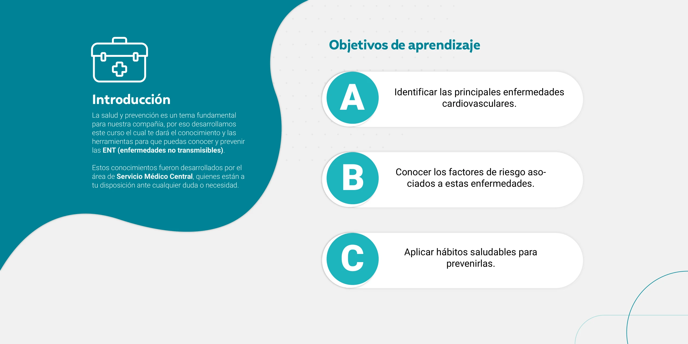
La salud y prevención es un tema fundamental para nuestra compañía, por eso desarrollamos este curso, el cual te dará el conocimiento y las herramientas para que puedas conocer y prevenir las ENT, enfermedades no transmisibles. Estos conocimientos fueron desarrollados por el área de Servicio Médico Central, quienes están a tu disposición ante cualquier duda o necesidad.
Objetivos de aprendizaje:
- Identificar las principales enfermedades cardiovasculares.
- Conocer los factores de riesgo asociados a estas enfermedades.
- Aplicar hábitos saludables para prevenirlas.
Índice de contenidos
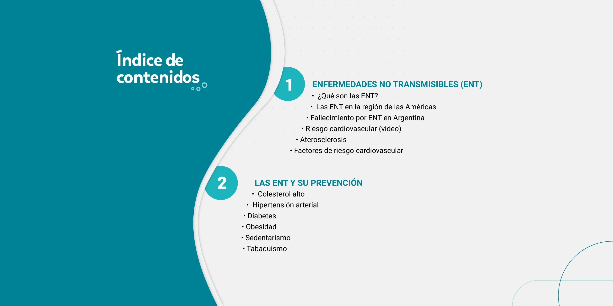
Unidad 1: Enfermedades no transmisibles (ENT).
Contiene: ¿Qué son las ENT?, Las ENT en la región de las Américas, Fallecimiento por ENT en Argentina, Riesgo cardiovascular, Aterosclerosis, Factores de riesgo cardiovascular.
Unidad 2: Las ENT y su prevención.
Contiene: Colesterol alto, Hipertensión arterial, Diabetes, Obesidad, Sedentarismo, Tabaquismo.
Unidad 1 — Enfermedades no transmisibles (ENT)
¿Qué son las ENT?
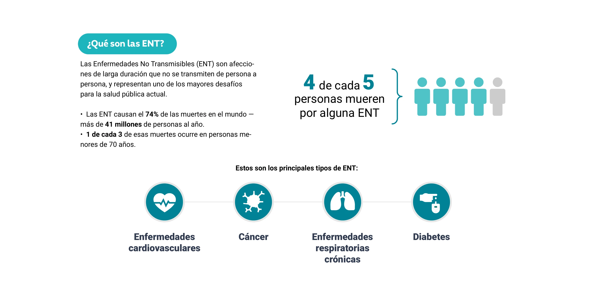
Las Enfermedades No Transmisibles, ENT, son afecciones de larga duración que no se transmiten de persona a persona, y representan uno de los mayores desafíos para la salud pública actual. Las ENT causan el 74% de las muertes en el mundo, más de 41 millones de personas al año. 1 de cada 3 de esas muertes ocurre en personas menores de 70 años. 4 de cada 5 personas mueren por alguna ENT. Estos son los principales tipos de ENT: enfermedades cardiovasculares, cáncer, enfermedades respiratorias crónicas y diabetes.
Las ENT en la región de las Américas
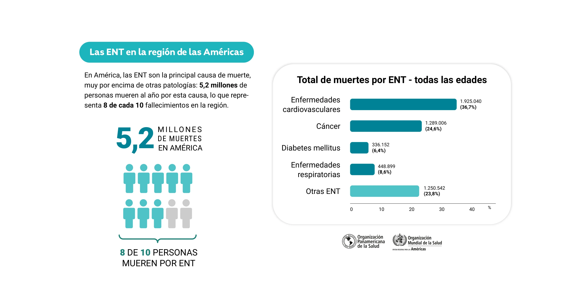
En América, las ENT son la principal causa de muerte, muy por encima de otras patologías: 5,2 millones de personas mueren al año por esta causa, lo que representa 8 de cada 10 fallecimientos en la región. Distribución del total de muertes por ENT, todas las edades: enfermedades cardiovasculares 36,7%, cáncer 24,6%, enfermedades respiratorias crónicas 8,6%, diabetes mellitus 6,4%, otras ENT 23,8%.
Fallecimiento por ENT en Argentina
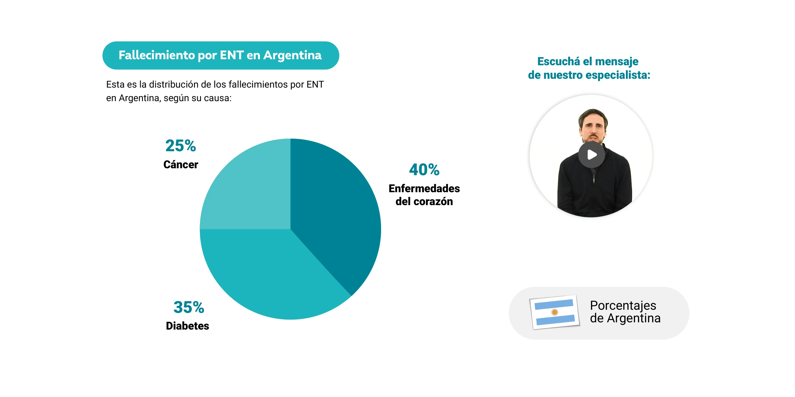
%
Esta es la distribución de los fallecimientos por ENT en Argentina, según su causa: enfermedades del corazón 40%, cáncer 25%, diabetes 35%. Escuchá el mensaje de nuestro especialista.
Riesgo cardiovascular
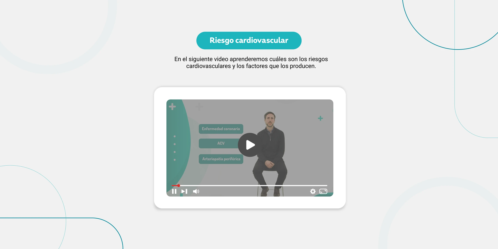
En el siguiente video aprenderemos cuáles son los riesgos cardiovasculares y los factores que los producen.
Aterosclerosis
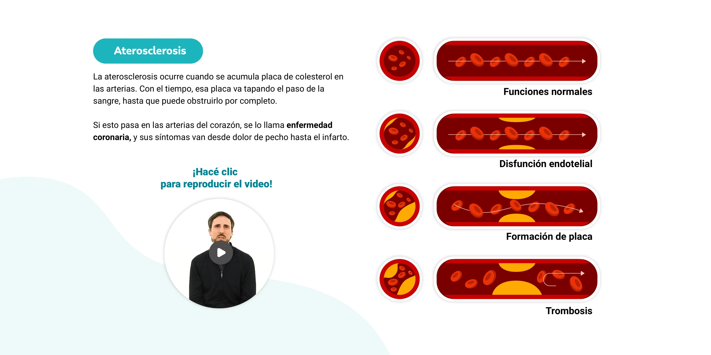
La aterosclerosis ocurre cuando se acumula placa de colesterol en las arterias. Con el tiempo, esa placa va tapando el paso de la sangre, hasta que puede obstruirlo por completo. Si esto pasa en las arterias del corazón, se lo llama enfermedad coronaria, y sus síntomas van desde dolor de pecho hasta el infarto. Etapas: funciones normales, disfunción endotelial, formación de placa, trombosis.
Factores de riesgo cardiovascular
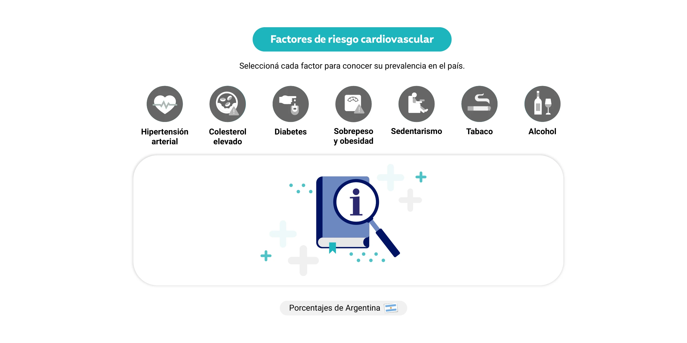
Seleccioná cada factor para conocer su prevalencia en el país: hipertensión arterial, colesterol elevado, diabetes, sobrepeso y obesidad, sedentarismo, tabaco, alcohol.
Hipertensión arterial: 34%. El 34% de la población argentina tiene hipertensión arterial. Es uno de los factores de riesgo más comunes para desarrollar enfermedades cardiovasculares.
Colesterol elevado: 29%. El 29% de la población argentina tiene el colesterol elevado. Es uno de los principales factores que favorecen la aterosclerosis y las enfermedades del corazón.
Diabetes: 12,7%. El 12,7% de la población argentina tiene diabetes o glucemia elevada, y esta cifra viene en aumento. Es un factor de riesgo clave para la salud del corazón.
Sobrepeso y obesidad: 61,6%. El 61,6% de la población argentina tiene sobrepeso u obesidad, y esta cifra viene en aumento. El exceso de peso es un factor de riesgo directo para las enfermedades cardiovasculares.
Sedentarismo: 64,9%. Más de la mitad de la población de 18 años o más no cumple con la actividad física mínima recomendada, y esta cifra viene en aumento. La falta de actividad física es un factor de riesgo relevante.
Tabaco: 22,7%. El 22,7% de la población argentina fuma, aunque esta cifra viene bajando en los últimos años, y también descendió la exposición al humo de tabaco ajeno. Aun así, el tabaco sigue siendo uno de los factores que más daña los vasos sanguíneos.
Alcohol: 13,3%. El 13,3% de la población consume alcohol en exceso en una misma ocasión, por ejemplo en una salida o celebración. El consumo excesivo de alcohol también es un factor de riesgo para la salud cardiovascular.
Unidad 2 — Las ENT y su prevención
Colesterol alto
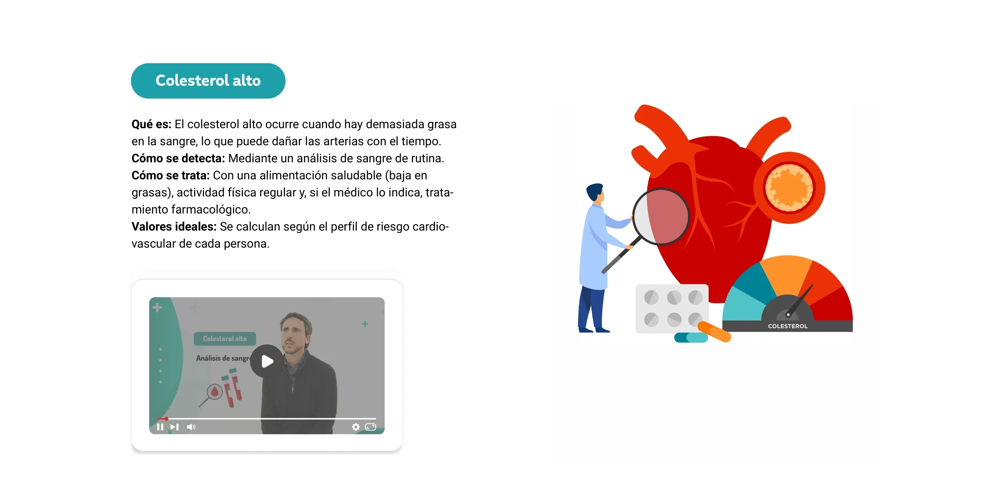
Qué es: el colesterol alto ocurre cuando hay demasiada grasa en la sangre, lo que puede dañar las arterias con el tiempo. Cómo se detecta: mediante un análisis de sangre de rutina. Cómo se trata: con una alimentación saludable, baja en grasas, actividad física regular y, si el médico lo indica, tratamiento farmacológico. Valores ideales: se calculan según el perfil de riesgo cardiovascular de cada persona.
Hipertensión arterial
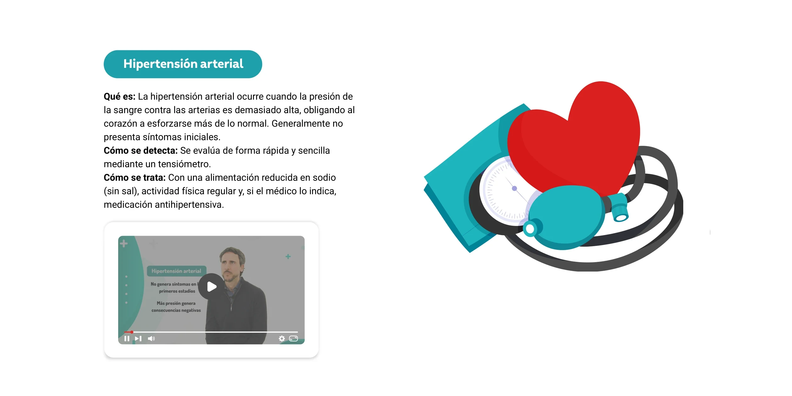
Qué es: la hipertensión arterial ocurre cuando la presión de la sangre contra las arterias es demasiado alta, obligando al corazón a esforzarse más de lo normal. Generalmente no presenta síntomas iniciales. Cómo se detecta: se evalúa de forma rápida y sencilla mediante un tensiómetro. Cómo se trata: con una alimentación reducida en sodio, sin sal, actividad física regular y, si el médico lo indica, medicación antihipertensiva.
Diabetes
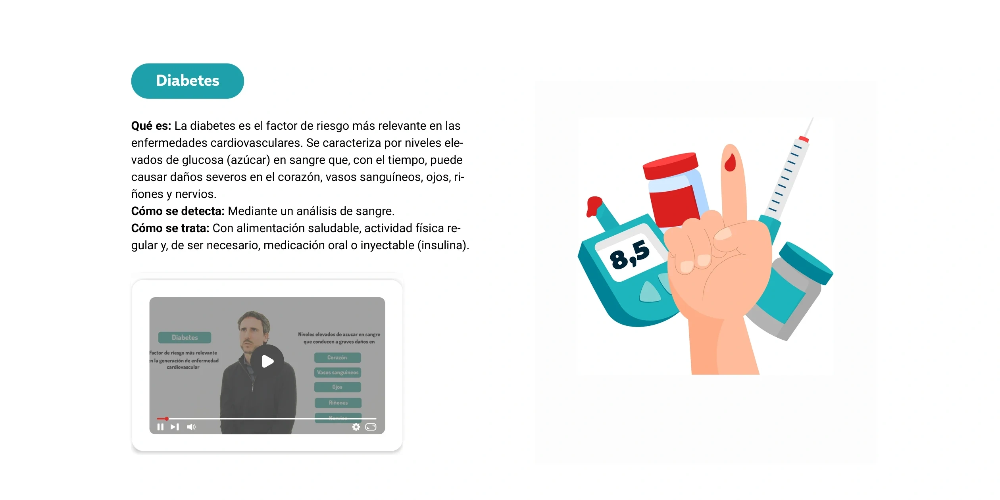
Qué es: la diabetes es el factor de riesgo más relevante en las enfermedades cardiovasculares. Se caracteriza por niveles elevados de glucosa, azúcar, en sangre que, con el tiempo, puede causar daños severos en el corazón, vasos sanguíneos, ojos, riñones y nervios. Cómo se detecta: mediante un análisis de sangre. Cómo se trata: con alimentación saludable, actividad física regular y, de ser necesario, medicación oral o inyectable, insulina.
Obesidad
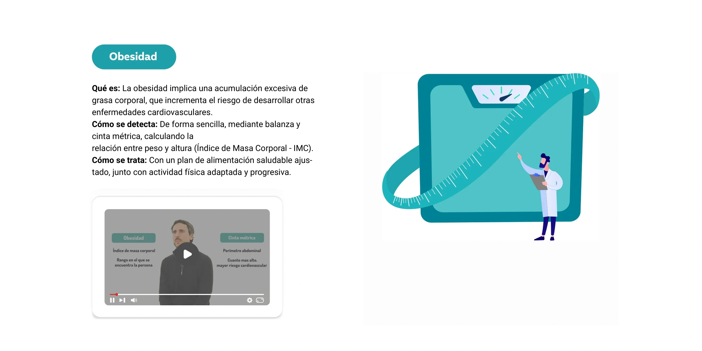
Qué es: la obesidad implica una acumulación excesiva de grasa corporal, que incrementa el riesgo de desarrollar otras enfermedades cardiovasculares. Cómo se detecta: de forma sencilla, mediante balanza y cinta métrica, calculando la relación entre peso y altura, Índice de Masa Corporal, IMC. Cómo se trata: con un plan de alimentación saludable ajustado, junto con actividad física adaptada y progresiva.
Sedentarismo
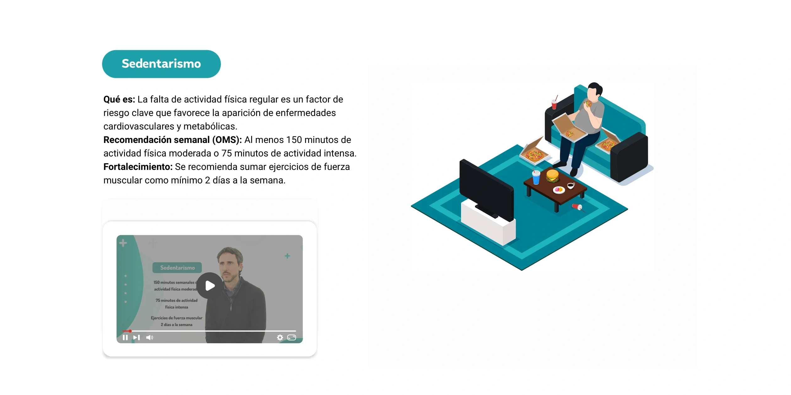
Qué es: la falta de actividad física regular es un factor de riesgo clave que favorece la aparición de enfermedades cardiovasculares y metabólicas. Recomendación semanal de la OMS: al menos 150 minutos de actividad física moderada o 75 minutos de actividad intensa. Fortalecimiento: se recomienda sumar ejercicios de fuerza muscular como mínimo 2 días a la semana.
Tabaquismo
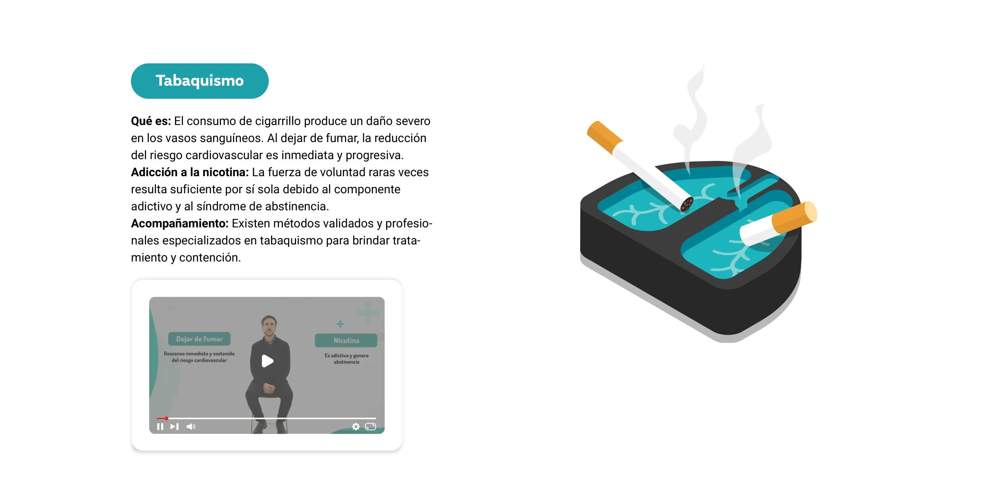
Qué es: el consumo de cigarrillo produce un daño severo en los vasos sanguíneos. Al dejar de fumar, la reducción del riesgo cardiovascular es inmediata y progresiva. Adicción a la nicotina: la fuerza de voluntad raras veces resulta suficiente por sí sola debido al componente adictivo y al síndrome de abstinencia. Acompañamiento: existen métodos validados y profesionales especializados en tabaquismo para brindar tratamiento y contención.
Poné a prueba lo que aprendiste
Son 3 preguntas para repasar, cada una con su explicación.
Esto no es la evaluación del curso. Es una práctica para vos: seguís dentro del contenido, no se guarda ninguna nota y podés repetirla las veces que quieras.
La evaluación final es un cuestionario aparte, que vas a encontrar en la plataforma cuando termines de ver todo el contenido del curso.
Últimos consejos
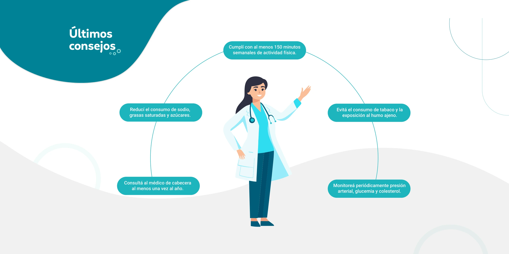
Últimos consejos: consultá al médico de cabecera al menos una vez al año. Cumplí con al menos 150 minutos semanales de actividad física. Evitá el consumo de tabaco y la exposición al humo ajeno. Reducí el consumo de sodio, grasas saturadas y azúcares. Monitoreá periódicamente presión arterial, glucemia y colesterol.
Cierre del curso
🔒 Hacé la mini práctica para desbloquear el cierre del curso.
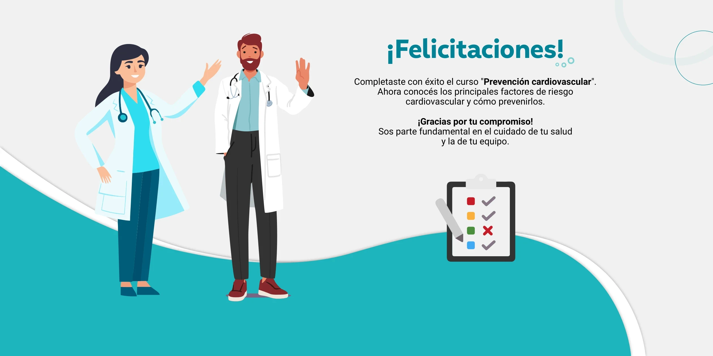
¡Felicitaciones! Completaste con éxito el curso "Prevención cardiovascular". Ahora conocés los principales factores de riesgo cardiovascular y cómo prevenirlos. ¡Gracias por tu compromiso! Sos parte fundamental en el cuidado de tu salud y la de tu equipo. Recordá que ya estás habilitado para realizar la evaluación. ¡Muchos éxitos!
¡Hola, ! 👋
Medalla de bronce
- 🥇Oro130 puntos o más
- 🥈Platade 115 a 129
- 🥉Broncemenos de 115
Recordá que la evaluación final es un cuestionario aparte, que vas a encontrar en la plataforma ahora que terminaste todo el contenido.
Repaso rápido de todo el curso
Conceptos clave
- ENT
- Afecciones de larga duración que no se transmiten de persona a persona: cardiovasculares, cáncer, diabetes y respiratorias crónicas.
- Aterosclerosis
- Placa de colesterol que se acumula en las arterias hasta tapar el paso de la sangre. Avanza en 4 etapas: funciones normales, disfunción endotelial, formación de placa y trombosis.
- Enfermedad coronaria
- Aterosclerosis en las arterias del corazón; va desde el dolor de pecho hasta el infarto.
- IMC
- Relación entre peso y altura que se usa para detectar sobrepeso u obesidad.
- Factor de riesgo
- Condición o hábito que aumenta la probabilidad de desarrollar una enfermedad cardiovascular.
Los 7 factores de riesgo, en Argentina
- Sedentarismo — 64,9%
- Sobrepeso y obesidad — 61,6%
- Hipertensión arterial — 34%
- Colesterol elevado — 29%
- Tabaco — 22,7%
- Alcohol en exceso — 13,3%
- Diabetes — 12,7%
Cómo se detecta cada uno
- Tensiómetro: presión arterial.
- Análisis de sangre: colesterol y glucemia.
- Balanza y cinta métrica: IMC y perímetro abdominal.
Las cifras del curso
- Las ENT causan el 74% de las muertes en el mundo.
- En América son 8 de cada 10 fallecimientos.
- En Argentina, las enfermedades del corazón explican el 40% de las muertes por ENT.
- Controlando los factores de riesgo se evita hasta el 50% de la mortalidad cardiovascular.
Para recordar
- Consultá al médico de cabecera al menos una vez al año.
- Cumplí con al menos 150 minutos semanales de actividad física.
- Evitá el tabaco y la exposición al humo ajeno.
- Reducí sodio, grasas saturadas y azúcares.
- Monitoreá presión arterial, glucemia y colesterol.
Buenas noticias
- La hipertensión no da síntomas al principio: por eso se mide, no se espera a sentirla.
- Al dejar de fumar, el riesgo baja de inmediato y sigue bajando.
- Para dejar el tabaco existen métodos validados y profesionales especializados: la fuerza de voluntad sola rara vez alcanza.
- Sumá ejercicios de fuerza muscular 2 días por semana.